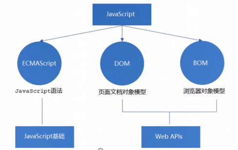

2019-12-04
Web API 和JS基础关联性
1.JS的组成

2.JS基础以及Web API
JS基础：主要是ECMAScript 标准规定的基本语法
Web API：是w3c组织的标准， 主要是DOM和BOM, 是JS所独有的部分
JS基础学习ECMAScript基础语法为后面作铺垫，Web APIs是JS的应用，通过使用JS基础语法实现页面的交互效果
MDN详细API: https://developer.mozilla.org/zh-CN/docs/Web/API
一：DOM
1. DOM简介
1.1 DOM
文档对象模型（Document Object Model，简称DOM），是W3C组织推荐的处理可扩展置标语言(HTML或者XML)的标准编程接口。
1.2 DOM树
- 文档：一个页面就是一个文档，DOM中用document表示
- 元素：页面中所有标签都是元素，DOM中用element表示
- 节点：网页中所有内容都是节点（标签、属性、文本、注释等），DOM中用node表示
DOM把以上内容都看作是对象
2. 获取元素
2.1 获取页面中元素方法
- 根据ID获取
- 根据标签获取
- 通过HTML5新增的方法获取
- 特殊元素获取
2.2根据ID获取
Element. getElementById(‘ID名’)；
使用getElementById()方法可以获取带有ID的元素对象
2.3根据标签名获取
Element.getElementsByTagName(‘标签名’);
获取过来的是，元素对象的集合，以伪数组的形式存储的；还可以获取某个元素（父元素）内部所有指定标签名的子元素，注意：父元素必须是单个对象（必须指明是哪一个元素对象），获取的时候不包括父元素自己
2.4通过HTML5新增的方法获取
document.getElementByClassName(‘类名’); //根据类名返回元素对象集合
document.querySelector(‘选择器’); //根据指定选择器返回第一个元素对象
document.querySelectorAll(‘选择器’); //根据指定选择器返回所有元素对象
2.5获取特殊元素（body、html）
获取body元素对象：document.body
获取html元素：document.documentElement
3.常见的鼠标事件
执行事件的步骤：获取事件源——注册事件（绑定事件）——添加事件处理程序（采取函数赋值形式）
4.操作元素
4.1 改变元素内容
element.innerText
从起始位置到终止位置的内容，但它去除html标签，同时空格和换行也会去掉
element.innerHTML
起始位置到终止位置的全部内容，包括html标签，同时保留空客和换行
4.2 常用元素的属性操作
1.innerText 、innerHTML 改变元素内容
2.src 、href
3.id 、alt 、title
4.3 表单元素的属性操作
利用DOM可以操作这些元素的属性：type 、value 、checked 、selected 、disabled
4.4 样式属性操作
通过JS修改元素的大小、颜色、位置等样式
1.element.style //行内样式操作
2.element.className //类名样式操作
操作元素是DOM核心内容
4.5 排他思想
如果有一组元素，需要某一个元素实现某种样式，就需要用到循环的排他思想算法：
4.6 自定义属性的操作
1.获取属性值
element.属性 //获取内置属性值（元素本身自带的属性）
element.getAttribute(‘属性’); //主要获得自定义的属性（标准） 自己定义的属性
5.节点操作
5.1 节点至少拥有nodeType(节点类型)、nodeName（节点名称）和nodeValue（节点值）
5.2 节点层级：常见的是父子兄层级关系
1.父级节点
node.parentNode //返回最近的一个父节点（没有则返回null）
- 2.子节点
- 2.1 parentNode.childNodes(标准)
返回包含指定节点的子节点集合，返回值里面包含了所有的子节点，包括元素节点，文本节点 - 2.2 parentNode.children(非标准)
是一个只读属性，返回所有的子元素节点，它只返回子元素节点，其余节点不返回（常用，重点掌握） - 2.3 parentNode.firstChild 返回第一个子节点，找不到则返回null 同样，包含所有的节点
- 2.4 parentNode.lastChild 返回最后一个子节点，找不到则返回null 同样，包含所有的节点
- 2.5 parentNode.firstElementChild 返回第一个子元素节点，找不到则返回null
- 2.6 parentNode.lastElementChild 返回最后一个子元素节点，找不到则返回null
这两个方法存在兼容，IE9以上才支持
- 3.兄弟节点
- 3.1 node.nextSibling 返回当前元素的下一个兄弟节点，找不到则返回null，同样，包含所有的节点
- 3.2 node.previousSibling 返回当前元素上一个兄弟节点，找不到则返回null, 同样，包含所有的节点
- 3.3 node.nextElementSibling 返回当前元素下一个兄弟元素节点，找不到则返回null
- 3.4 node.previousElementSibling 返回当前元素上一个兄弟节点，找不到则返回null
这两个方法存在兼容，IE9以上才支持
解决兼容性：封装一个兼容性的函数